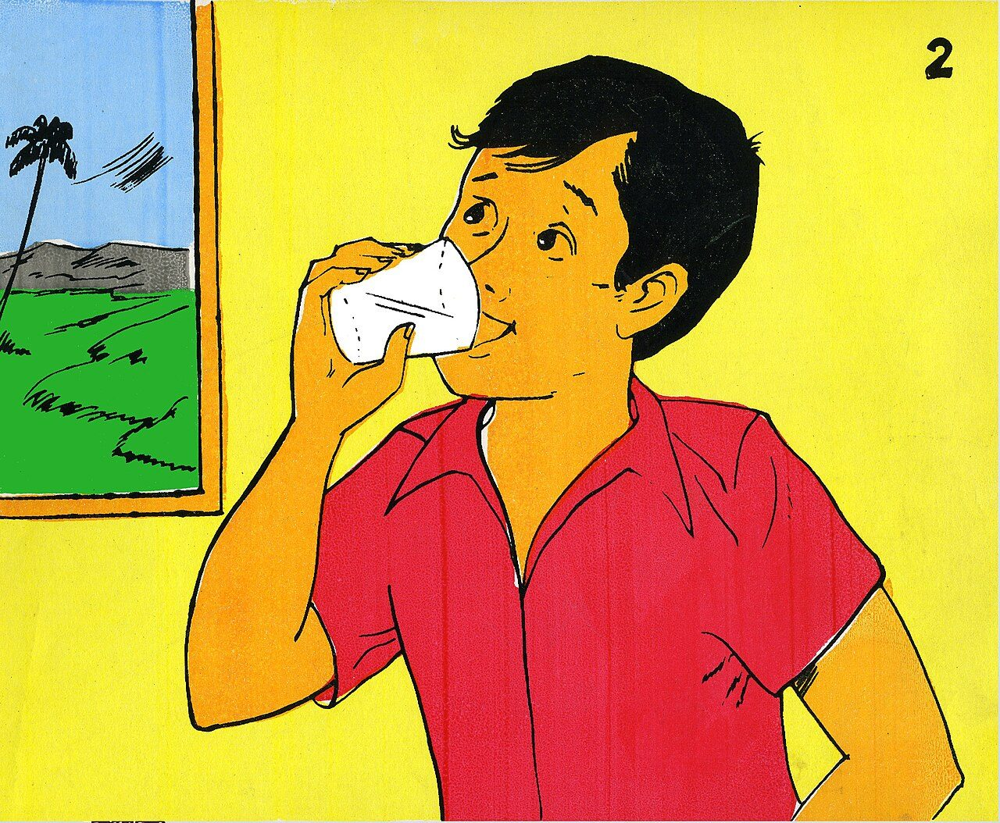
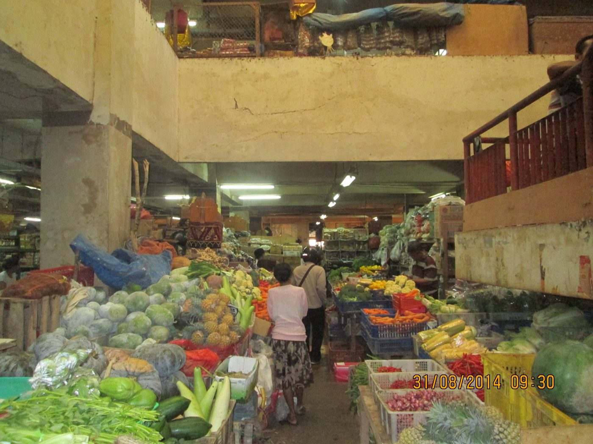

Tidur cukup dan teratur
Tidur adalah waktu tubuh memperbaiki sel dan otak merapikan ingatan. Kurang tidur dikaitkan dengan naiknya risiko tekanan darah tinggi, berat badan berlebih, dan suasana hati yang buruk.
Pola hidup sehat bukan satu kegiatan besar, melainkan kumpulan kebiasaan kecil yang saling menopang. Halaman ini merangkum tujuh di antaranya, lengkap dengan ukuran yang bisa kamu cek sendiri.
Pola hidup sehat adalah cara seseorang menjalani hari-harinya secara sadar agar tubuh, pikiran, dan lingkungannya tetap dalam kondisi baik. Isinya bukan hanya olahraga atau diet, tetapi juga tidur, kebersihan, cara mengelola tekanan, dan kebiasaan memeriksakan diri.
Karena berbentuk kebiasaan, perubahan besar justru jarang bertahan. Yang biasanya berhasil adalah perubahan kecil yang diulang setiap hari sampai terasa otomatis.
Pegangan sederhana: kalau sebuah kebiasaan bisa kamu lakukan saat sedang malas dan sedang sibuk, itu baru bisa disebut kebiasaan. Sisanya masih niat.

Tidur adalah waktu tubuh memperbaiki sel dan otak merapikan ingatan. Kurang tidur dikaitkan dengan naiknya risiko tekanan darah tinggi, berat badan berlebih, dan suasana hati yang buruk.
Tiga kali makan utama dengan porsi wajar, plus camilan buah bila perlu. Hindari melewatkan sarapan lalu "membalasnya" dengan porsi besar di malam hari.
Anjuran WHO: 150 menit aktivitas intensitas sedang per minggu untuk dewasa. Bisa dipecah 30 menit lima kali seminggu.
Cuci tangan pakai sabun, mandi, menjaga kebersihan mulut, dan mengelola sampah rumah tangga. Ini pencegahan penyakit menular paling murah.
Rokok membunuh lebih dari 8 juta orang setiap tahun (WHO), termasuk sekitar 1,2 juta perokok pasif. Berhenti kapan pun tetap memberi manfaat.
Stres wajar. Yang bermasalah adalah stres yang berlangsung lama tanpa jeda. Butuh teknik relaksasi, batas waktu kerja, dan orang yang bisa diajak bicara.
Tekanan darah, gula darah, dan lingkar perut bisa menunjukkan risiko jauh sebelum gejala muncul. Cek minimal setahun sekali di puskesmas atau klinik.
Jangan ubah tujuh hal sekaligus. Pilih satu, jalankan dua minggu, baru tambah satu lagi. Perubahan yang bertahan selalu terasa membosankan di awal.
Angka berikut adalah rentang yang umum dipakai Kementerian Kesehatan RI. Kebutuhan tiap orang bisa berbeda, tetapi jauh di luar rentang ini biasanya perlu diperiksa.
| Kelompok usia | Kebutuhan tidur | Catatan |
|---|---|---|
| Bayi baru lahir | 14–17 jam per hari | Tidur belum teratur dan terbagi dalam banyak sesi. |
| Anak usia sekolah | 9–11 jam per hari | Kurang tidur mengganggu konsentrasi belajar. |
| Remaja | 8–10 jam per hari | Jam biologis remaja cenderung lebih lambat, jadi tidur larut itu wajar, durasinya yang perlu dijaga. |
| Dewasa (18–40 tahun) | 7–9 jam per hari | Termasuk mahasiswa. Tidur kurang dari 7 jam sering dianggap normal padahal tidak. |
| Lanjut usia | 7–8 jam per hari | Sering terbangun malam hari; jaga tetap rutin bangun dan tidur. |
Sumber: Kementerian Kesehatan RI (upk.kemkes.go.id dan keslan.kemkes.go.id).
Kementerian Kesehatan RI memakai singkatan G4-G1-L5 untuk mengingatkan batas konsumsi harian: gula 4 sendok makan, garam 1 sendok teh, dan lemak 5 sendok makan per orang per hari.
Angka ini setara dengan 50 gram gula, 5 gram garam (2000 mg natrium), dan 67 gram lemak. Masalahnya, sebagian besar konsumsi itu datang dari makanan kemasan dan minuman manis, bukan dari sendok yang kita tuang sendiri.

Bukan target sempurna, hanya pengingat. Kalau hari ini hanya tercapai tiga dari tujuh, itu tetap lebih baik daripada nol.
Terbiasa bukan berarti cukup. Tubuh bisa beradaptasi secara subjektif, tetapi fungsi konsentrasi, daya tahan, dan metabolisme tetap terganggu. Rasa "sudah biasa" sering hanya berarti kepekaan terhadap kurang tidur sudah menurun.
Keduanya bekerja di jalur berbeda. Olahraga tidak bisa menetralkan kelebihan gula dan garam, dan pola makan baik tidak bisa menggantikan manfaat latihan kekuatan serta kebugaran jantung.
Jalan kaki, tidur cukup, air putih, dan memasak sendiri justru lebih murah daripada membeli minuman manis setiap hari. Yang mahal biasanya biaya pengobatan saat penyakit sudah muncul.
Hipertensi sering disebut silent killer karena tidak bergejala sampai terjadi komplikasi. Pemeriksaan rutin justru ditujukan untuk menangkap risiko pada tahap awal.
Setelah kebiasaan dasar, hal yang paling cepat memberi hasil adalah memperbaiki komposisi makanan sehari-hari.